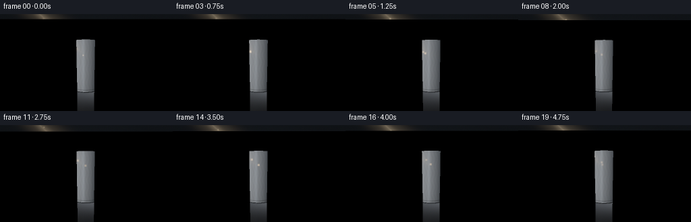
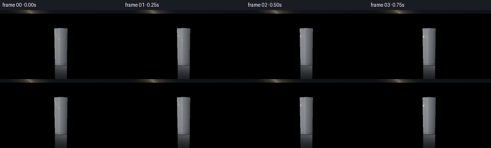
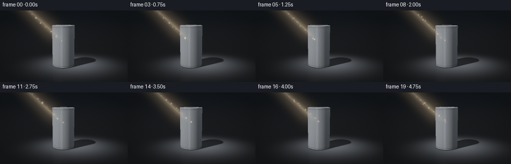
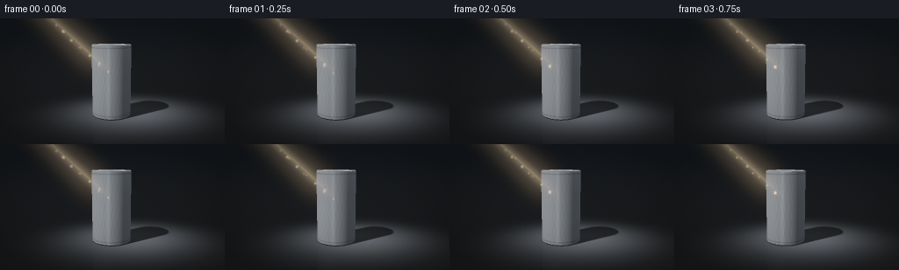
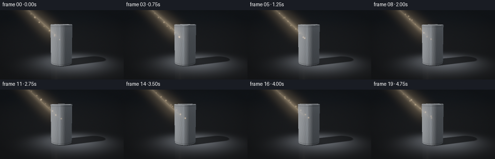
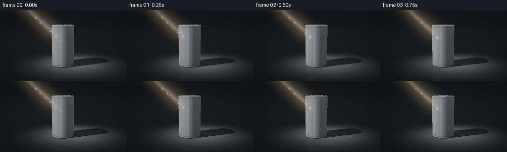

CODING AGENTS AS PIXEL WORLD MODELS
traex/DeepSeek-V4.1-Flash · phygen_042
点击播放 · 原生 RGB 像素
此结果可播放，但该运行尚未通过最终提交审核。页面展示不代表评测通过。
逐轮保存的候选
回放视频、检查图与代码变化。
每份候选均可单独播放。实际图片检查记录在下方工具轨迹中。
候选 01播放与检查图
点击播放 · 原生 RGB 像素


展开代码变化
--- 上一保存版本
+++ 本次保存版本
@@ -0,0 +1,464 @@
+"""Procedural ray-traced shot of a metal can caught by a diagonal beam."""
+
+from __future__ import annotations
+
+import json
+import math
+from pathlib import Path
+
+import cv2
+import numpy as np
+from PIL import Image
+
+import artifact_io
+
+
+CASE_DIR = Path(__file__).resolve().parent
+SPEC = json.loads((CASE_DIR / "task_spec.json").read_text())
+WIDTH = int(SPEC["width"])
+HEIGHT = int(SPEC["height"])
+FRAMES = int(SPEC["frames"])
+FPS = float(SPEC["fps"])
+SS = 2
+
+
+def normalize(v: np.ndarray) -> np.ndarray:
+ return v / np.maximum(np.linalg.norm(v, axis=-1, keepdims=True), 1e-8)
+
+
+def smoothstep(edge0: float, edge1: float, x: np.ndarray) -> np.ndarray:
+ t = np.clip((x - edge0) / (edge1 - edge0), 0.0, 1.0)
+ return t * t * (3.0 - 2.0 * t)
+
+
+def camera_for_frame(frame: int) -> tuple[np.ndarray, np.ndarray, np.ndarray, np.ndarray, float]:
+ phase = 2.0 * math.pi * frame / FRAMES
+ az = math.radians(-1.1 + 0.65 * math.sin(phase - 0.45))
+ radius = 4.28 - 0.035 * math.cos(phase)
+ cam = np.array(
+ [
+ radius * math.sin(az),
+ 1.43 + 0.008 * math.sin(phase + 0.7),
+ radius * math.cos(az),
+ ],
+ dtype=np.float64,
+ )
+ target = np.array([0.015, 0.60, 0.0], dtype=np.float64)
+ forward = normalize(target - cam)
+ right = normalize(np.cross(forward, np.array([0.0, 1.0, 0.0])))
+ up = normalize(np.cross(right, forward))
+ vfov = math.radians(28.5)
+ return cam, forward, right, up, vfov
+
+
+def make_rays(
+ cam: np.ndarray,
+ forward: np.ndarray,
+ right: np.ndarray,
+ up: np.ndarray,
+ vfov: float,
+) -> tuple[np.ndarray, np.ndarray, np.ndarray]:
+ rw, rh = WIDTH * SS, HEIGHT * SS
+ px = (np.arange(rw, dtype=np.float64) + 0.5) / rw
+ py = (np.arange(rh, dtype=np.float64) + 0.5) / rh
+ xx, yy = np.meshgrid(px, py)
+ tan_v = math.tan(vfov * 0.5)
+ tan_h = tan_v * WIDTH / HEIGHT
+ direction = (
+ forward[None, None, :]
+ + ((xx - 0.5) * 2.0 * tan_h)[..., None] * right[None, None, :]
+ + ((0.5 - yy) * 2.0 * tan_v)[..., None] * up[None, None, :]
+ )
+ direction = normalize(direction)
+ origin = np.broadcast_to(cam, direction.shape).copy()
+ return origin, direction, np.stack((xx, yy), axis=-1)
+
+
+def cylinder_hit(
+ origin: np.ndarray,
+ direction: np.ndarray,
+ radius: float = 0.335,
+ y0: float = 0.018,
+ y1: float = 1.235,
+) -> tuple[np.ndarray, np.ndarray]:
+ """Return nearest valid side hit distance and points."""
+ ox, oy, oz = origin[..., 0], origin[..., 1], origin[..., 2]
+ dx, dy, dz = direction[..., 0], direction[..., 1], direction[..., 2]
+ a = dx * dx + dz * dz
+ b = 2.0 * (ox * dx + oz * dz)
+ c = ox * ox + oz * oz - radius * radius
+ disc = b * b - 4.0 * a * c
+ root = np.sqrt(np.maximum(disc, 0.0))
+ t_near = (-b - root) / (2.0 * a)
+ t_far = (-b + root) / (2.0 * a)
+ y_near = oy + t_near * dy
+ y_far = oy + t_far * dy
+ valid_near = (disc >= 0.0) & (t_near > 1e-5) & (y_near >= y0) & (y_near <= y1)
+ valid_far = (disc >= 0.0) & (t_far > 1e-5) & (y_far >= y0) & (y_far <= y1)
+ t = np.where(valid_near, t_near, np.where(valid_far, t_far, np.inf))
+ return t, origin + t[..., None] * direction
+
+
+def top_cap_hit(
+ origin: np.ndarray,
+ direction: np.ndarray,
+ radius: float = 0.335,
+ y1: float = 1.235,
+) -> tuple[np.ndarray, np.ndarray]:
+ dy = direction[..., 1]
+ t = (y1 - origin[..., 1]) / np.where(np.abs(dy) < 1e-8, -1e-8, dy)
+ p = origin + t[..., None] * direction
+ rho2 = p[..., 0] ** 2 + p[..., 2] ** 2
+ valid = (t > 1e-5) & (rho2 <= radius * radius)
+ return np.where(valid, t, np.inf), p
+
+
+def floor_hit(origin: np.ndarray, direction: np.ndarray) -> tuple[np.ndarray, np.ndarray]:
+ dy = direction[..., 1]
+ t = -origin[..., 1] / np.where(dy < -1e-8, dy, -1e-8)
+ valid = (dy < -1e-8) & (t > 1e-5)
+ p = origin + t[..., None] * direction
+ return np.where(valid, t, np.inf), p
+
+
+def shadow_test(points: np.ndarray, light_to_scene: np.ndarray) -> np.ndarray:
+ """Soft directional shadow from the can onto the floor."""
+ total = np.zeros(points.shape[:-1], dtype=np.float64)
+ samples = 5
+ for i in range(samples):
+ angle = (i - 2) * 0.012
+ ca, sa = math.cos(angle), math.sin(angle)
+ dx = light_to_scene[0] * ca - light_to_scene[2] * sa
+ dz = light_to_scene[0] * sa + light_to_scene[2] * ca
+ direction = np.broadcast_to(
+ np.array([dx, light_to_scene[1], dz]), points.shape
+ )
+ t_hit, _ = cylinder_hit(points + np.array([0.0, 0.0015, 0.0]), direction)
+ hit = np.isfinite(t_hit)
+ total += hit
+ return total / samples
+
+
+def shade_can(
+ points: np.ndarray,
+ normals: np.ndarray,
+ view_dir: np.ndarray,
+ light_dir: np.ndarray,
+ top_mask: np.ndarray,
+) -> np.ndarray:
+ """Brushed silver body and recessed can top."""
+ n_dot_l = np.clip(np.sum(normals * light_dir, axis=-1), 0.0, 1.0)
+ half_vec = normalize(light_dir - view_dir)
+ n_dot_h = np.clip(np.sum(normals * half_vec, axis=-1), 0.0, 1.0)
+ n_dot_v = np.clip(np.sum(normals * (-view_dir), axis=-1), 0.0, 1.0)
+ fresnel = 0.05 + 0.95 * np.power(1.0 - n_dot_v, 5.0)
+
+ reflected = view_dir - 2.0 * np.sum(view_dir * normals, axis=-1, keepdims=True) * normals
+ reflected = normalize(reflected)
+ horizon = np.exp(-np.square((reflected[..., 1] - 0.02) / 0.105))
+ side_strip = np.exp(-np.square((reflected[..., 0] + 0.33) / 0.16))
+ strip_visibility = smoothstep(-0.2, 0.5, reflected[..., 2])
+ env = (
+ np.array([0.035, 0.048, 0.064])[None, None, :]
+ * (0.42 + 0.58 * (0.5 + 0.5 * reflected[..., 1:2]))
+ + np.array([0.28, 0.32, 0.37])[None, None, :] * (horizon[..., None] * 0.22)
+ + np.array([0.50, 0.58, 0.66])[None, None, :]
+ * (side_strip[..., None] * strip_visibility[..., None] * 0.20)
+ )
+
+ theta = np.arctan2(points[..., 2], points[..., 0])
+ brushed = 0.94 + 0.045 * np.sin(31.0 * theta + 1.7 * np.sin(points[..., 1] * 21.0))
+ body_albedo = np.array([0.56, 0.59, 0.62])[None, None, :] * brushed[..., None]
+ diffuse = body_albedo * (0.055 + 0.68 * n_dot_l[..., None])
+ specular = (
+ np.array([1.0, 0.84, 0.62])[None, None, :]
+ * np.power(n_dot_h, 92.0)[..., None]
+ * 2.65
+ )
+ broad_spec = (
+ np.array([0.68, 0.76, 0.88])[None, None, :]
+ * np.power(n_dot_h, 12.0)[..., None]
+ * 0.16
+ )
+ body = diffuse + env * (0.55 + 0.75 * fresnel[..., None]) + specular + broad_spec
+
+ y = points[..., 1]
+ groove = (
+ np.exp(-np.square((y - 0.060) / 0.010))
+ + np.exp(-np.square((y - 1.190) / 0.009))
+ )
+ body *= (1.0 - 0.38 * groove)[..., None]
+ body += np.array([0.72, 0.76, 0.80])[None, None, :] * (
+ groove * np.power(n_dot_h, 18.0) * 0.38
+ )[..., None]
+
+ rho = np.sqrt(points[..., 0] ** 2 + points[..., 2] ** 2) / 0.335
+ rim = smoothstep(0.88, 0.93, rho) * (1.0 - smoothstep(0.965, 1.0, rho))
+ recess = 1.0 - smoothstep(0.18, 0.78, rho)
+ cap_albedo = np.array([0.60, 0.63, 0.66])[None, None, :]
+ cap_diffuse = cap_albedo * (0.09 + 0.74 * n_dot_l[..., None])
+ cap_spec = (
+ np.array([1.0, 0.88, 0.69])[None, None, :]
+ * np.power(n_dot_h, 115.0)[..., None]
+ * 3.1
+ )
+ cap = cap_diffuse + env * 0.40 + cap_spec
+ cap *= (1.0 - 0.52 * recess)[..., None]
+ cap += rim[..., None] * np.array([0.58, 0.64, 0.70])[None, None, :] * (
+ 0.44 + 1.3 * np.power(n_dot_h, 30.0)
+ )[..., None]
+
+ # A shallow pull-tab impression catches a few pixels of extra light.
+ tab_x = points[..., 0] + 0.015
+ tab_z = points[..., 2] + 0.035
+ tab_r = np.sqrt((tab_x / 0.125) ** 2 + (tab_z / 0.070) ** 2)
+ tab = (1.0 - smoothstep(0.86, 1.0, tab_r)) * smoothstep(0.72, 0.88, tab_r)
+ cap += tab[..., None] * np.array([0.33, 0.37, 0.40])[None, None, :]
+
+ return np.where(top_mask[..., None], cap, body)
+
+
+def project_point(
+ point: np.ndarray,
+ cam: np.ndarray,
+ forward: np.ndarray,
+ right: np.ndarray,
+ up: np.ndarray,
+ vfov: float,
+) -> np.ndarray:
+ v = point - cam
+ depth = np.dot(v, forward)
+ tan_v = math.tan(vfov * 0.5)
+ tan_h = tan_v * WIDTH / HEIGHT
+ nx = np.dot(v, right) / (depth * tan_h)
+ ny = np.dot(v, up) / (depth * tan_v)
+ rw, rh = WIDTH * SS, HEIGHT * SS
+ return np.array([(nx * 0.5 + 0.5) * rw, (0.5 - ny * 0.5) * rh])
+
+
+def add_volumetric_beam(
+ image: np.ndarray,
+ can_mask: np.ndarray,
+ cam: np.ndarray,
+ forward: np.ndarray,
+ right: np.ndarray,
+ up: np.ndarray,
+ vfov: float,
+ frame: int,
+) -> None:
+ rw, rh = WIDTH * SS, HEIGHT * SS
+ phase = 2.0 * math.pi * frame / FRAMES
+ apex = project_point(
+ np.array([-2.65, 3.35, 0.86]), cam, forward, right, up, vfov
+ )
+ endpoint = project_point(
+ np.array([-0.02, 0.76, 0.0]), cam, forward, right, up, vfov
+ )
+ # The beam breathes slightly, as if fine dust is moving through it.
+ apex = apex + np.array([1.0 * math.sin(phase), 0.7 * math.cos(phase)])
+
+ yy, xx = np.mgrid[0:rh, 0:rw]
+ seg = endpoint - apex
+ seg_len2 = max(float(np.dot(seg, seg)), 1.0)
+ u = ((xx - apex[0]) * seg[0] + (yy - apex[1]) * seg[1]) / seg_len2
+ u = np.clip(u, 0.0, 1.0)
+ closest = apex[None, None, :] + u[..., None] * seg[None, None, :]
+ dist = np.sqrt((xx - closest[..., 0]) ** 2 + (yy - closest[..., 1]) ** 2)
+ width = 5.0 + 6.0 * u
+ halo = np.exp(-np.square(dist / (width * 3.1)))
+ body = np.exp(-np.square(dist / (width * 1.28)) * 1.7)
+ core = np.exp(-np.square(dist / np.maximum(width * 0.22, 1.0)))
+ length_fade = smoothstep(0.0, 0.09, u) * (1.0 - smoothstep(0.88, 1.02, u))
+ flicker = 0.92 + 0.08 * math.sin(phase * 1.4 + 0.3)
+ light = (halo * 0.075 + body * 0.16 + core * 0.11) * length_fade * flicker
+ light *= 1.0 - 0.42 * can_mask
+ beam_color = np.array([1.0, 0.76, 0.47])
+ image += light[..., None] * beam_color[None, None, :]
+
+
+def add_dust(
+ image: np.ndarray,
+ cam: np.ndarray,
+ forward: np.ndarray,
+ right: np.ndarray,
+ up: np.ndarray,
+ vfov: float,
+ frame: int,
+) -> None:
+ rw, rh = WIDTH * SS, HEIGHT * SS
+ phase = 2.0 * math.pi * frame / FRAMES
+ apex = project_point(
+ np.array([-2.65, 3.35, 0.86]), cam, forward, right, up, vfov
+ )
+ endpoint = project_point(
+ np.array([-0.02, 0.76, 0.0]), cam, forward, right, up, vfov
+ )
+ seg = endpoint - apex
+ normal = np.array([-seg[1], seg[0]]) / max(np.linalg.norm(seg), 1.0)
+ for i in range(38):
+ # Deterministic particle field confined to the illuminated cone.
+ u0 = ((i * 0.61803398875 + 0.17) % 1.0)
+ u = (u0 + 0.035 * frame / FRAMES + 0.012 * math.sin(phase + i)) % 1.0
+ spread = (2.0 + 4.6 * u) * math.sin(i * 2.37 + phase * 0.8)
+ pos = apex + u * seg + normal * spread
+ pos[1] += 1.2 * math.sin(phase + i * 1.91)
+ x, y = int(round(pos[0])), int(round(pos[1]))
+ if x < 2 or y < 2 or x >= rw - 2 or y >= rh - 2:
+ continue
+ twinkle = 0.35 + 0.65 * (0.5 + 0.5 * math.sin(phase * 2.1 + i * 2.73))
+ size = 1.3 + 0.55 * (i % 3)
+ xx, yy = np.meshgrid(np.arange(-3, 4), np.arange(-3, 4))
+ g = np.exp(-(xx * xx + yy * yy) / (2.0 * size * size))
+ patch = image[y - 3 : y + 4, x - 3 : x + 4]
+ patch += g[..., None] * np.array([0.55, 0.39, 0.23]) * twinkle
+
+
+def render_frame(frame: int) -> np.ndarray:
+ cam, forward, right, up, vfov = camera_for_frame(frame)
+ origin, direction, _ = make_rays(cam, forward, right, up, vfov)
+
+ t_body, p_body = cylinder_hit(origin, direction)
+ t_top, p_top = top_cap_hit(origin, direction)
+ t_floor, p_floor = floor_hit(origin, direction)
+
+ t_can = np.minimum(t_body, t_top)
+ can_mask = np.isfinite(t_can)
+ t_best = np.minimum(t_can, t_floor)
+ hit_any = np.isfinite(t_best)
+
+ light_to_scene = normalize(np.array([0.52, -0.78, -0.34]))
+ light_dir = -light_to_scene
+
+ image = np.zeros((HEIGHT * SS, WIDTH * SS, 3), dtype=np.float64)
+ # Deep blue-black room above the floor.
+ bg = np.array([0.0035, 0.0052, 0.0075])
+ image += bg
+
+ floor_normals = np.zeros_like(p_floor)
+ floor_normals[..., 1] = 1.0
+ floor_points = p_floor
+ pool = np.exp(
+ -(
+ np.square((floor_points[..., 0] - 0.38) / 0.92)
+ + np.square((floor_points[..., 2] + 0.08) / 0.74)
+ )
+ )
+ shadow = shadow_test(floor_points, light_dir)
+ direct_floor = pool * (1.0 - 0.94 * shadow)
+ floor_albedo = np.array([0.072, 0.079, 0.090])
+ floor_color = floor_albedo * (0.075 + 2.25 * direct_floor[..., None])
+
+ # A cool grazing sheen keeps the floor from reading as a flat card.
+ view_floor = -direction
+ floor_fresnel = 0.02 + 0.34 * np.power(
+ 1.0 - np.clip(view_floor[..., 1], 0.0, 1.0), 4.0
+ )
+ reflected = direction - 2.0 * direction[..., 1:2] * floor_normals
+ reflected = normalize(reflected)
+ rt, rp = cylinder_hit(floor_points, reflected)
+ rt2, rp2 = top_cap_hit(floor_points, reflected)
+ use_top = rt2 < rt
+ r_t = np.minimum(rt, rt2)
+ r_p = np.where(use_top[..., None], rp2, rp)
+ r_normal = np.stack(
+ (
+ r_p[..., 0] / 0.335,
+ np.zeros_like(r_p[..., 0]),
+ r_p[..., 2] / 0.335,
+ ),
+ axis=-1,
+ )
+ r_normal = np.where(use_top[..., None], np.array([0.0, 1.0, 0.0]), r_normal)
+ reflection_color = shade_can(
+ r_p, r_normal, reflected, light_dir, use_top
+ )
+ reflection_strength = 0.16 * floor_fresnel * np.isfinite(r_t)
+ floor_color += reflection_color * reflection_strength[..., None]
+ distance_fade = np.exp(-0.034 * np.maximum(t_floor, 0.0))
+ floor_color = floor_color * distance_fade[..., None] + bg * (1.0 - distance_fade[..., None])
+
+ # Soft contact occlusion directly beneath the base.
+ base_dist = np.sqrt(
+ np.square(floor_points[..., 0] / 0.52)
+ + np.square(floor_points[..., 2] / 0.43)
+ )
+ contact = np.exp(-np.square(base_dist / 0.46))
+ floor_color *= (1.0 - 0.78 * contact)[..., None]
+
+ can_normals = np.where(
+ (t_top < t_body)[..., None],
+ np.array([0.0, 1.0, 0.0]),
+ np.stack(
+ (
+ p_body[..., 0] / 0.335,
+ np.zeros_like(p_body[..., 0]),
+ p_body[..., 2] / 0.335,
+ ),
+ axis=-1,
+ ),
+ )
+ can_points = np.where((t_top < t_body)[..., None], p_top, p_body)
+ top_mask = t_top < t_body
+ can_color = shade_can(can_points, can_normals, direction, light_dir, top_mask)
+
+ image = np.where(can_mask[..., None], can_color, image)
+ image = np.where((t_floor < t_can)[..., None], floor_color, image)
+
+ add_volumetric_beam(image, can_mask.astype(np.float64), cam, forward, right, up, vfov, frame)
+ add_dust(image, cam, forward, right, up, vfov, frame)
+
+ # Small, physically plausible bloom around the hottest highlights.
+ bright = np.clip(image - 0.82, 0.0, None)
+ bloom = cv2.GaussianBlur(bright, (0, 0), sigmaX=4.2, sigmaY=4.2)
+ image += bloom * 0.55
+
+ # Filmic shoulder, gentle lift, and a restrained vignette.
+ exposure = 1.18
+ mapped = 1.0 - np.exp(-np.maximum(image, 0.0) * exposure)
+ mapped = np.power(mapped, 1.0 / 2.2)
+ yy, xx = np.mgrid[0 : HEIGHT * SS, 0 : WIDTH * SS]
+ nx = (xx / (WIDTH * SS) - 0.5) * 2.0
+ ny = (yy / (HEIGHT * SS) - 0.5) * 2.0
+ vignette = 1.0 - 0.28 * np.clip((nx * nx * 0.66 + ny * ny * 0.80), 0.0, 1.0)
+ mapped *= vignette[..., None]
+
+ # A whisper of grain prevents banding in the near-black floor.
+ rng = np.random.default_rng(1009 + frame)
+ mapped += rng.normal(0.0, 0.0032, mapped.shape)
+ mapped = np.clip(mapped * 255.0 + 0.5, 0.0, 255.0).astype(np.uint8)
+
+ small = cv2.resize(mapped, (WIDTH, HEIGHT), interpolation=cv2.INTER_AREA)
+ return small
+
+
+def main() -> None:
+ frames = np.stack([render_frame(i) for i in range(FRAMES)], axis=0)
+ artifact_io.save(frames, CASE_DIR)
+
+ # Also provide a directly playable RGB video in addition to the canonical artifacts.
+ video_path = CASE_DIR / "video.mp4"
+ writer = cv2.VideoWriter(
+ str(video_path),
+ cv2.VideoWriter_fourcc(*"mp4v"),
+ FPS,
+ (WIDTH, HEIGHT),
+ )
+ if writer.isOpened():
+ for frame in frames:
+ writer.write(cv2.cvtColor(frame, cv2.COLOR_RGB2BGR))
+ writer.release()
+
+ pil_frames = [Image.fromarray(frame) for frame in frames]
+ pil_frames[0].save(
+ CASE_DIR / "video.gif",
+ save_all=True,
+ append_images=pil_frames[1:],
+ duration=round(1000 / FPS),
+ loop=0,
+ optimize=False,
+ )
+ print(f"rendered {frames.shape} at {FPS:g} fps")
+
+
+if __name__ == "__main__":
+ main()
候选 02播放与检查图
点击播放 · 原生 RGB 像素


展开代码变化
--- 上一保存版本
+++ 本次保存版本
@@ -147,6 +147,9 @@
top_mask: np.ndarray,
) -> np.ndarray:
"""Brushed silver body and recessed can top."""
+ points = np.nan_to_num(points, nan=0.0, posinf=0.0, neginf=0.0)
+ normals = np.nan_to_num(normals, nan=0.0, posinf=0.0, neginf=0.0)
+ view_dir = np.nan_to_num(view_dir, nan=0.0, posinf=0.0, neginf=0.0)
n_dot_l = np.clip(np.sum(normals * light_dir, axis=-1), 0.0, 1.0)
half_vec = normalize(light_dir - view_dir)
n_dot_h = np.clip(np.sum(normals * half_vec, axis=-1), 0.0, 1.0)
@@ -360,6 +363,7 @@
use_top = rt2 < rt
r_t = np.minimum(rt, rt2)
r_p = np.where(use_top[..., None], rp2, rp)
+ r_p = np.nan_to_num(r_p, nan=0.0, posinf=0.0, neginf=0.0)
r_normal = np.stack(
(
r_p[..., 0] / 0.335,
@@ -397,7 +401,9 @@
axis=-1,
),
)
- can_points = np.where((t_top < t_body)[..., None], p_top, p_body)
+ p_body_safe = np.nan_to_num(p_body, nan=0.0, posinf=0.0, neginf=0.0)
+ p_top_safe = np.nan_to_num(p_top, nan=0.0, posinf=0.0, neginf=0.0)
+ can_points = np.where((t_top < t_body)[..., None], p_top_safe, p_body_safe)
top_mask = t_top < t_body
can_color = shade_can(can_points, can_normals, direction, light_dir, top_mask)
候选 03播放与检查图
点击播放 · 原生 RGB 像素


展开代码变化
--- 上一保存版本
+++ 本次保存版本
@@ -329,8 +329,8 @@
t_best = np.minimum(t_can, t_floor)
hit_any = np.isfinite(t_best)
- light_to_scene = normalize(np.array([0.52, -0.78, -0.34]))
- light_dir = -light_to_scene
+ # Surface-to-light vector, aligned with the visible shaft from upper-left.
+ light_dir = normalize(np.array([-0.69, 0.68, 0.23]))
image = np.zeros((HEIGHT * SS, WIDTH * SS, 3), dtype=np.float64)
# Deep blue-black room above the floor.
可观测工具轨迹
实际执行的命令与返回图片。
命令 1exit 0
/bin/bash -c "pwd && rg --files -g '"'!*.pyc'"' -g '"'!__pycache__'"' | sed -n '1,200p'"
命令 2exit 0
/bin/bash -c 'cat prompt.txt'
命令 3exit 0
/bin/bash -c 'cat GENERATION_RULES.md'
命令 4exit 0
/bin/bash -c 'cat task_spec.json'
命令 5exit 0
/bin/bash -c "sed -n '1,260p' artifact_io.py"
命令 6exit 0
/bin/bash -c "sed -n '1,260p' player_template.html"
命令 7exit 0
/bin/bash -c "python - <<'PY' import importlib.util for m in ['numpy','PIL','cv2','imageio','matplotlib']: print(m, bool(importlib.util.find_spec(m))) PY ffmpeg -version | head -n 2"
命令 8exit 127
/bin/bash -c "/usr/bin/time -f 'elapsed %E maxrss %MKB' python generate.py"
命令 9exit 0
/bin/bash -c 'time python generate.py'
命令 10exit 0
/bin/bash -c 'which chafa || true; which viu || true; which jp2 || true; which img2txt || true; ls -lh frames inspection.png pixels.npz video.mp4 video.gif'
命令 11exit 0
/bin/bash -c 'python generate.py'
命令 12exit 1
/bin/bash -c "python - <<'PY'
from PIL import Image
im=Image.open('inspection.png')
print(im.size)
im.resize((1024,330), Image.Resampling.NEAREST).save('/tmp/inspect_big.png')
PY"命令 13exit 0
/bin/bash -c "mkdir -p .tmp && python - <<'PY'
from PIL import Image
im=Image.open('inspection.png')
im.resize((1024,330), Image.Resampling.NEAREST).save('.tmp/inspect_big.png')
PY"命令 14exit 0
/bin/bash -c "python - <<'PY'
import numpy as np
from PIL import Image
chars=' .:-=+*#%@'
for fi in [0,7,14,19]:
a=np.array(Image.open(f'frames/{fi:02d}.png').convert('L')).astype(float)
# local resize, then gamma-ish
b=np.array(Image.fromarray(a.astype('uint8')).resize((64,30),Image.Resampling.BOX))
lo,hi=np.percentile(b,[1,99]); q=np.clip((b-lo)/(hi-lo+1e-6),0,1)
print('\\nFRAME',fi,'range',int(a.min()),int(a.max()),'mean',a.mean().round(2),'p99',np.percentile(a,99))
for row in q:
print(''.join(chars[min(len(chars)-1,int(v*(len(chars)-1)+0.01))] for v in row))
PY"命令 15exit 0
/bin/bash -c "python generate.py && python - <<'PY'
import numpy as np
from PIL import Image
chars=' .:-=+*#%@'
for fi in [0,10,19]:
a=np.array(Image.open(f'frames/{fi:02d}.png').convert('L')).astype(float)
b=np.array(Image.fromarray(a.astype('uint8')).resize((64,30),Image.Resampling.BOX))
lo,hi=np.percentile(b,[1,99]); q=np.clip((b-lo)/(hi-lo+1e-6),0,1)
print('\\nFRAME',fi,'range',int(a.min()),int(a.max()),'mean',a.mean().round(2),'p99',np.percentile(a,99))
for row in q:
print(''.join(chars[min(len(chars)-1,int(v*(len(chars)-1)+0.01))] for v in row))
PY"命令 16exit 0
/bin/bash -c "python - <<'PY'
import numpy as np
from PIL import Image
fs=np.stack([np.array(Image.open(f'frames/{i:02d}.png')) for i in range(20)])
print('shape/dtype',fs.shape,fs.dtype)
print('channel min/max/mean',[(int(fs[...,c].min()),int(fs[...,c].max()),round(float(fs[...,c].mean()),2)) for c in range(3)])
print('global pct',np.percentile(fs,[0,1,10,50,90,99,100]))
d=np.abs(np.diff(fs.astype(np.int16),axis=0))
print('temporal MAD per step',np.round(d.mean(axis=(1,2,3)),3))
print('changed px (>3)',np.round((d.max(axis=3)>3).mean(axis=(1,2)),4))
for i in [0,5,10,15,19]:
a=fs[i].astype(float).mean(2)
print(i,'center crop',np.round(a[35:120,80:175].mean(),1),'top',np.round(a[:40].mean(),1),'floor',np.round(a[100:].mean(),1))
PY"命令 17exit 0
/bin/bash -c "python - <<'PY'
import cv2, numpy as np, json
from PIL import Image
v=cv2.VideoCapture('video.mp4')
print('opened',v.isOpened(),'frames',int(v.get(cv2.CAP_PROP_FRAME_COUNT)),'fps',v.get(cv2.CAP_PROP_FPS),'size',int(v.get(cv2.CAP_PROP_FRAME_WIDTH)),int(v.get(cv2.CAP_PROP_FRAME_HEIGHT)))
read=[]
while True:
ok,f=v.read()
if not ok: break
read.append(f)
print('decoded',len(read),'first mean',read[0].mean() if read else None)
z=np.load('pixels.npz')['pixels']
print('npz',z.shape,z.dtype,'unique first',len(np.unique(z[:,:,0])))
im=np.array(Image.open('frames/00.png')).mean(2)
for y in range(0,144,16):
print(f'{y:3d}', ' '.join(f'{im[y:y+16,x:x+16].mean():5.1f}' for x in range(0,256,16)))
PY"命令 18exit 0
/bin/bash -c "python -m py_compile generate.py && python - <<'PY'
from pathlib import Path
import json, numpy as np, cv2
spec=json.loads(Path('task_spec.json').read_text())
z=np.load('pixels.npz')['pixels']
assert z.shape==(spec['height'],spec['width'],spec['frames'])
assert len(list(Path('frames').glob('*.png')))==spec['frames']
cap=cv2.VideoCapture('video.mp4')
assert cap.isOpened()
assert int(cap.get(cv2.CAP_PROP_FRAME_COUNT))==spec['frames']
assert int(cap.get(cv2.CAP_PROP_FRAME_WIDTH))==spec['width']
assert int(cap.get(cv2.CAP_PROP_FRAME_HEIGHT))==spec['height']
assert abs(cap.get(cv2.CAP_PROP_FPS)-spec['fps'])<1e-6
cap.release()
for p in ['generate.py','pixels.npz','index.html','inspection.png','transition_check.png','video.mp4','video.gif']:
assert Path(p).is_file() and Path(p).stat().st_size>0, p
print('contract OK:', z.shape, 'frames; 256x144 @ 4 fps')
print('artifacts:', ', '.join(p for p in ['generate.py','pixels.npz','index.html','video.mp4','video.gif','inspection.png']))
PY"保存候选 3 份；完成命令 18 次；可验证图片返回 0 张。原始 API 响应与完整日志保留在本地。